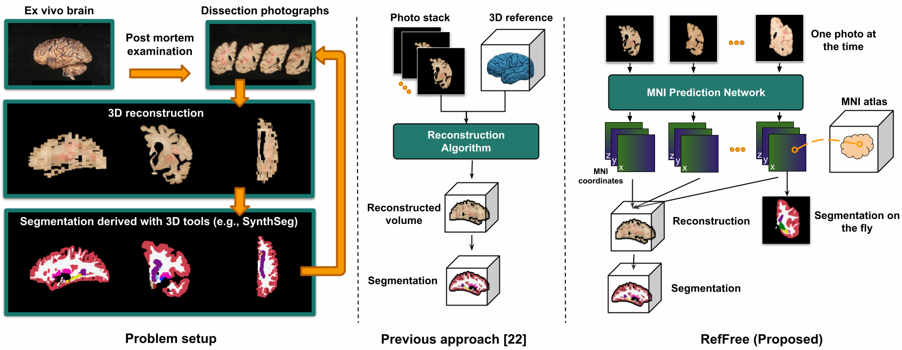
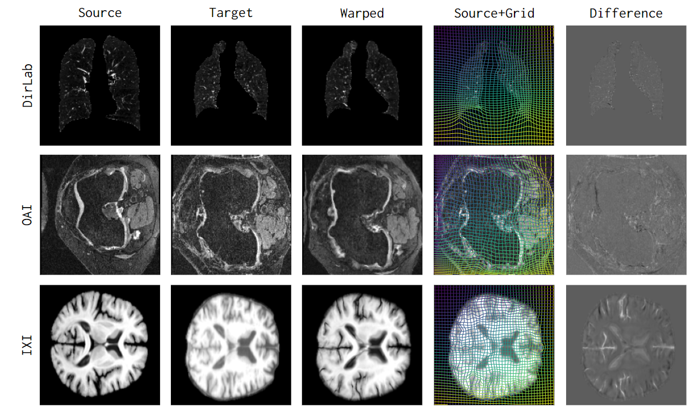
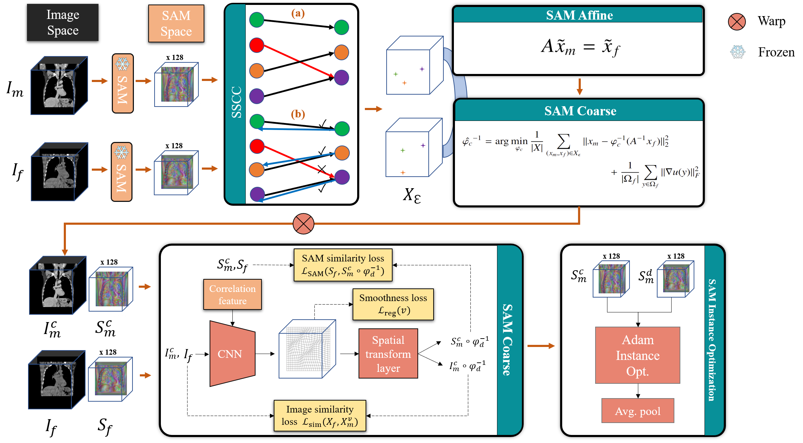
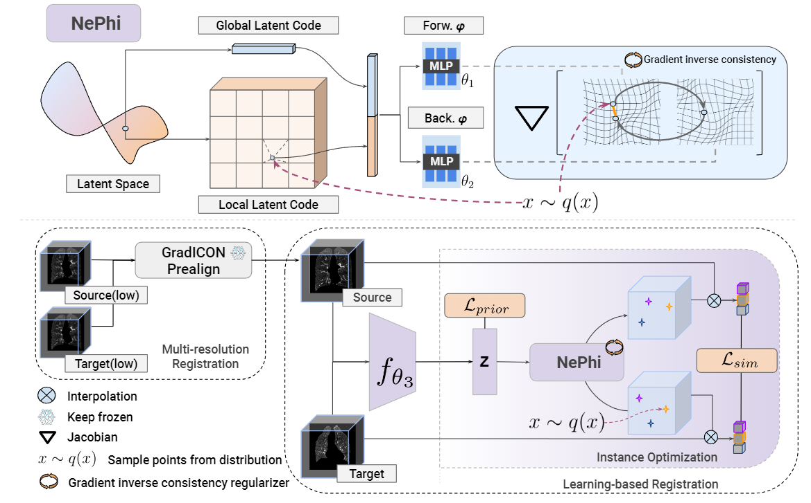
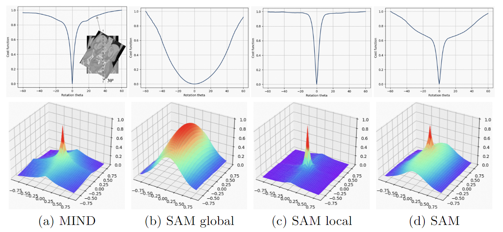
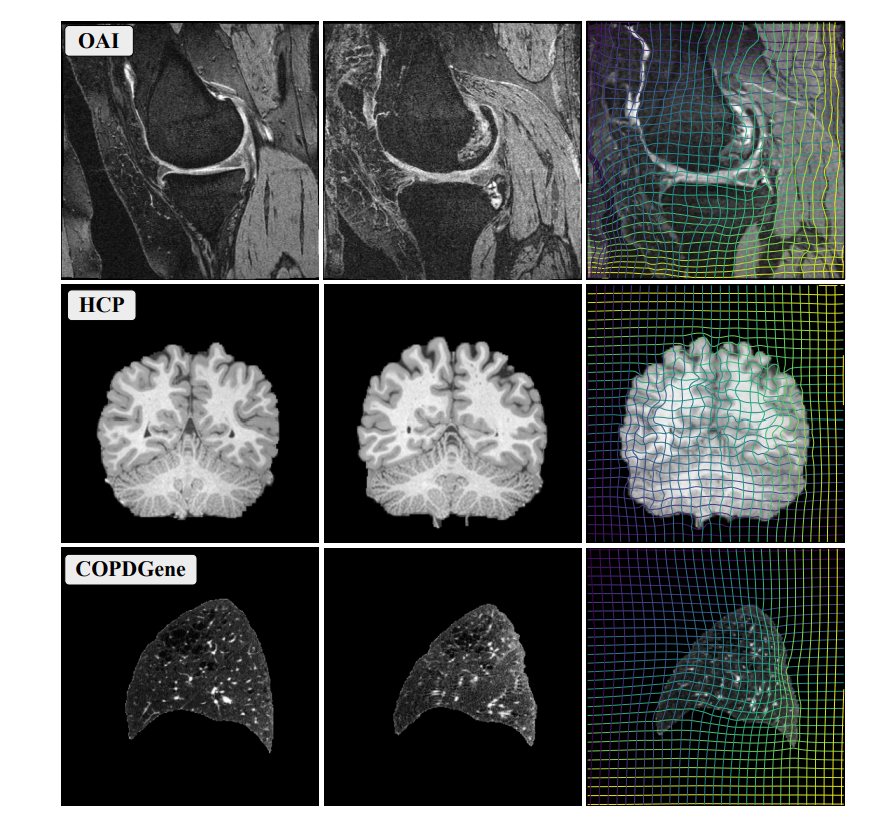
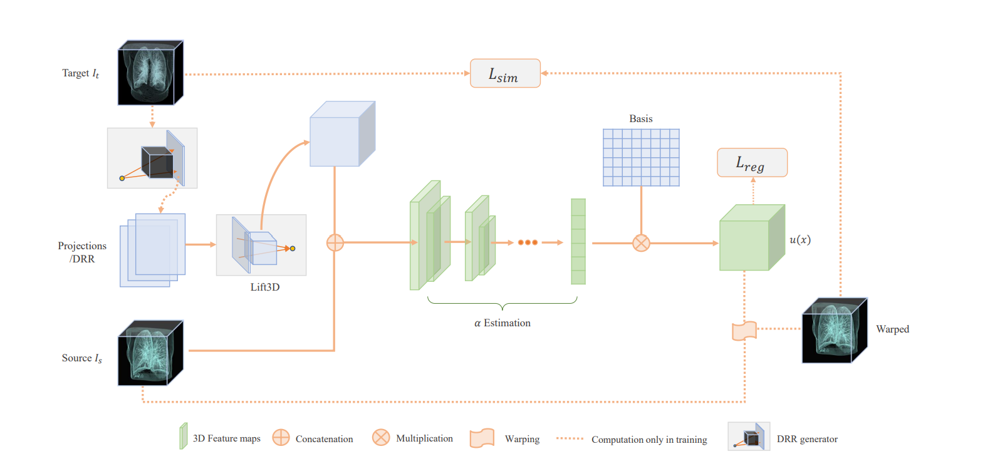
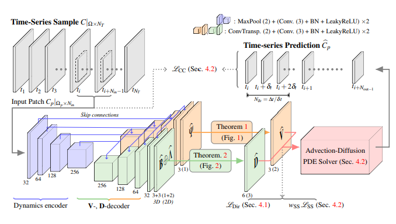
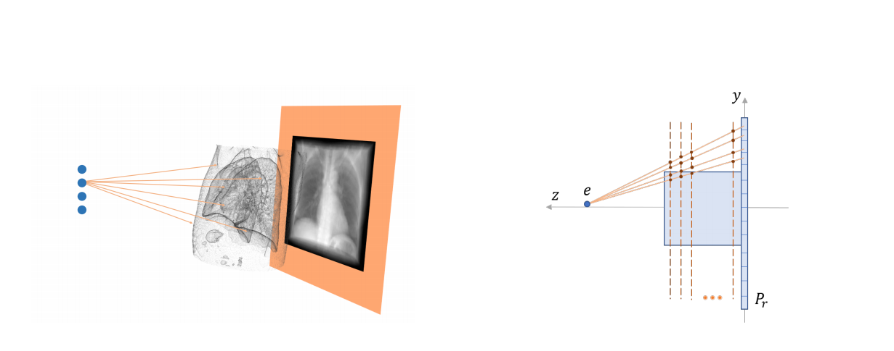

Lin Tian
Research FellowHarvard Medial School, Massachusetts General Hospital
Email: lintian@cs.unc.edu
[GoogleScholar] [LinkedIn] [GitHub] [CV]
My name is Lin Tian. I am a postdoctoral researcher at LEMoN, Athinoula A. Martinos Center for Biomedical Imaging, Harvard Medical School & Massachusetts General Hospital, working with Dr. Juan Eugenio Iglesias. I obtained my PhD in Computer Science from UNC Chapel Hill under the supervision of Prof. Marc Niethammer. Before attending UNC, I earned my M.S. from the University of Southern California (USC) and my B.S. from Huazhong University of Science and Technology (HUST). During my PhD, I worked as a research scientist intern at ByteDance AI, Alibaba DAMO, and Alphabet X (formerly Google X).
My research interests broadly lie in computer vision (2D and 3D), medical imaging and machine learning, with a focus on 3D spatial alignment between images and modalities. I am particularly interested in the following topics:
- Robust and generalizable deep learning for medical image registration via transformation regularization [CVPR'23,ECCV'24], similarity measure [MICCAI'23,arXiv], and foundation model [MICCAI'24].
- Dynamic subject 3D reconstruction from 2D images or videos, such as 2D tomosynthesis images [MICCAI'20,MICCAI'22], ultrasound images, RGBD images, and ex vivo dissection photographs [arXiv].
- Multi-modality joint representation learning for medical images.
News
- [03/2025] » New preprint: "Reference-Free 3D Reconstruction of Brain Dissection Photographs with Machine Learning" [arXiv] [Code]
- [02/2025] » CARL has been accepted by CVPR 2025.
- [01/2025] » Serve as Area Chair for MICCAI 2025.
- [07/2024] » multiGradICON has been accepted by WBIR 2024 for oral presentation.
- [07/2024] » NePhi has been accepted by ECCV 2024.
- [06/2024] » I will join Harvard Medical School & Massachusetts General Hospital as a Research Fellow.
- [06/2024] » uniGradICON has been accepted by MICCAI 2024.
- [06/2024] » I successfully defended my PhD.
- [03/2024] » New preprint: "uniGradICON: A Foundation Model for Medical Image Registration" [arXiv] [Code]
- [11/2023] » New preprint: "SAME++: A Self-supervised Anatomical eMbeddings Enhanced medical image registration framework using stable sampling and regularized transformation" [arXiv] [Code]
- [09/2023] » New preprint: "NePhi: Neural Deformation Fields for Approximately Diffeomorphic Medical Image Registration" [arXiv]
- [06/2023] » Two papers accepted at MICCAI 2023.
- [05/2022] » Research Internship @ Google, working with Alexander Zoellner, Ningrui Li, and Atilla Kiraly.
- [02/2023] » One paper accepted at CVPR 2023.
- [06/2022] » Received MICCAI Student Travel Award.
- [06/2022] » One paper accepted at MICCAI 2022.
- [05/2022] » Research Internship @ Alibaba DAMO Academy, working with Dakai Jin and Ke Yan.
- [05/2021] » Research Internship @ ByteDance AI Lab, working with Imran Saleemi and Chao Wang.
- [02/2021] » One paper accepted at CVPR 2021.
- [06/2020] » One paper accepted at MICCAI 2020.
- [08/2019] » I joined UNC CS as a PhD student.
Publications
|

|
|
|

|
|
|

|
|
|

|
NePhi: Neural Deformation Fields for Approximately Diffeomorphic Medical Image Registration
ECCV 2024
|
|

|
|
|

|
|
|

|
|
|

|
|
|

|
Fluid Registration Between Lung CT and Stationary Chest Tomosynthesis Images
MICCAI 2020
|
Honors
- [2025] Rising Stars in EECS, MIT & BU
- [2025] NSF Travel Award, CVPR Doctoral Consortium
- [2024] Best Oral Presentation, MICCAI WBIR
- [2022] Student Travel Award, MICCAI
- [2006] National Scholarship, Huazhong University of Science and Technology
Talks and Presentations
- [05/2025] HMBA meeting, Allen Institute
- [05/2024] CNS Lab, Stanford University
- [04/2024] PICSL, University of Pennsylvania
- [02/2024] LCN, Harvard Medical School & Massachusetts General Hospital
- [02/2024] QTIM, Harvard Medical School & Massachusetts General Hospital
Services
- Area Chair : MICCAI 2025
- Conference Reviewer : CVPR, ICCV, ECCV, MICCAI, AAAI
- Journal Reviewer: TPAMI, MedIA, TMI, Pattern Recognition
Miscs
- My Chinese name is 田琳.
- I am also a game developer [AsGameDeveloper]